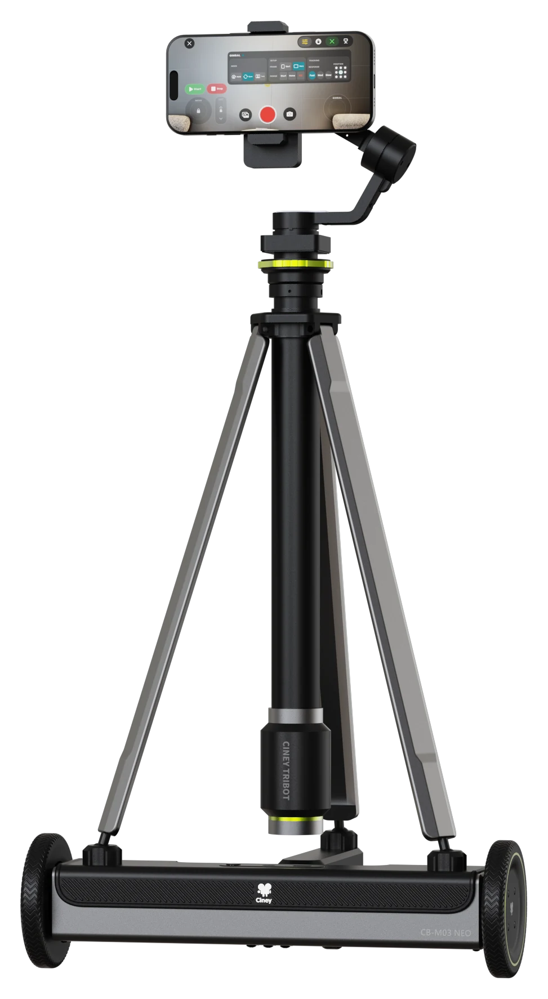
On location.
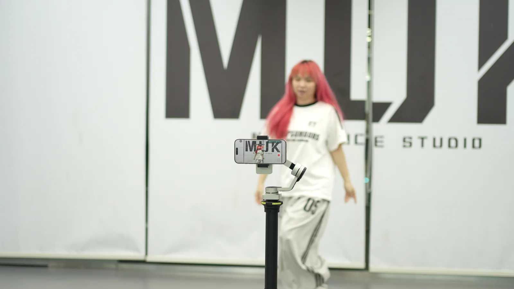
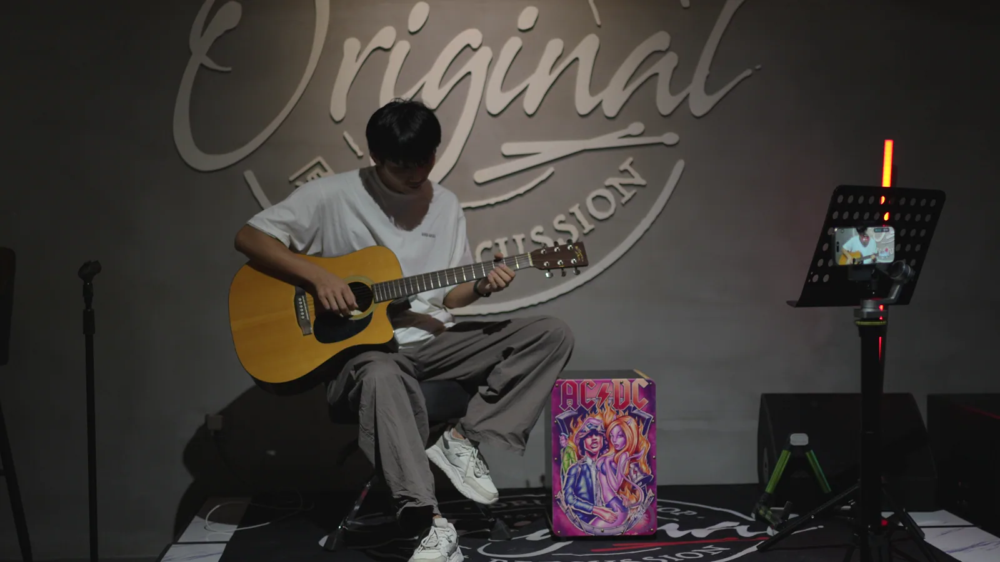
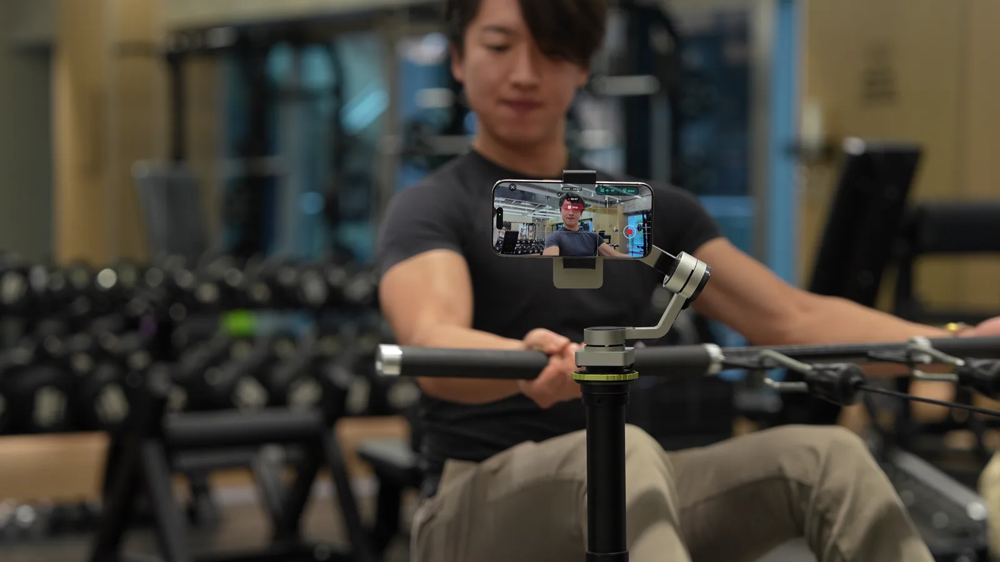
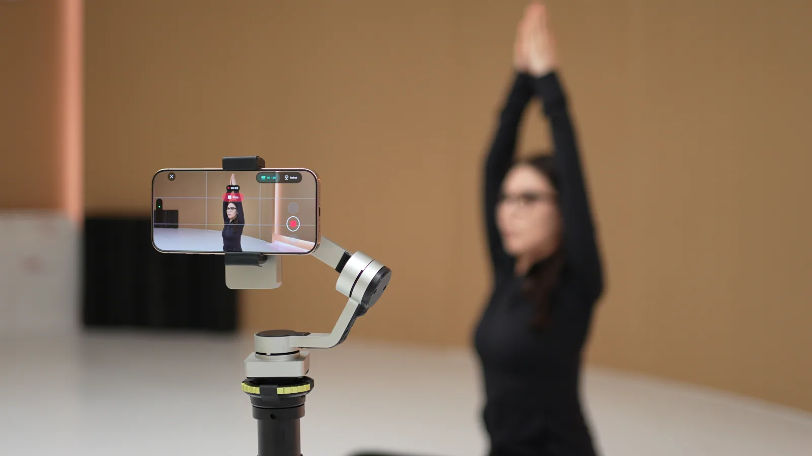
The design.
01 / 05
Unfold.
Mount your phone.
Scroll to explore ↓
1×
Live music
Training
Make it your own.
- Select & follow
- Subject tracking.
- Design a move
- Custom routes & replay.
- Capture your way
- Photo. Video. Time-lapse.
App tools and compatibility depend on the final hardware, phone and software versions.
Your move. Your way.
Customize any route.
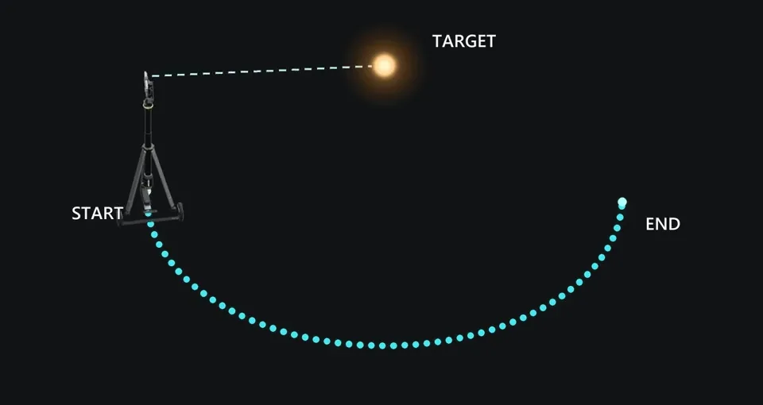
Orbit
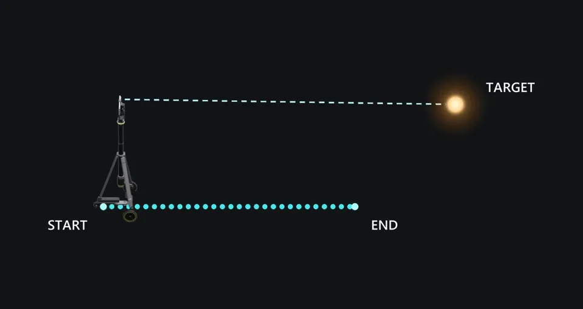
Push in
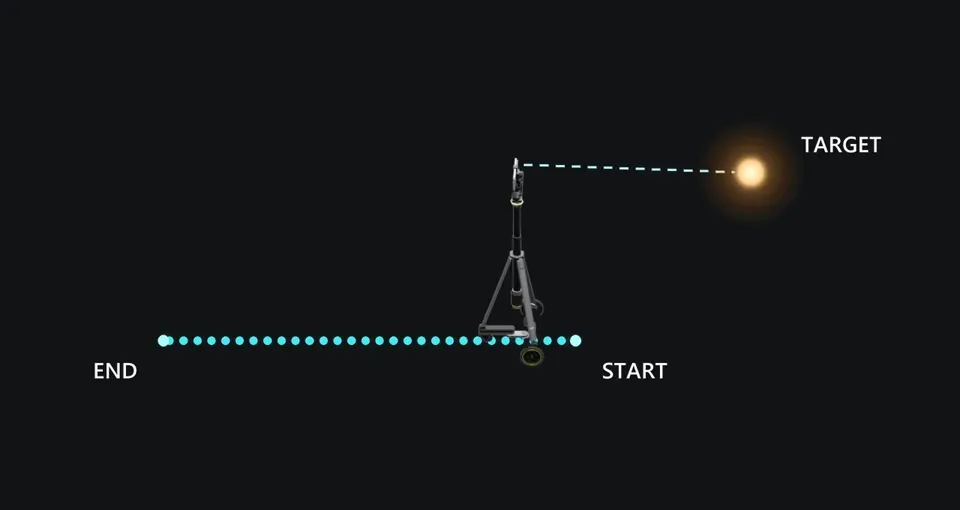
Pull back
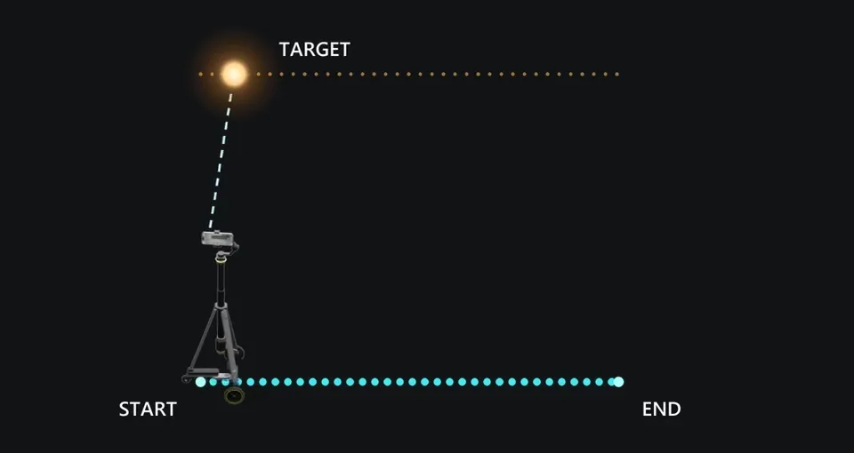
Track alongside
More moves 03 +
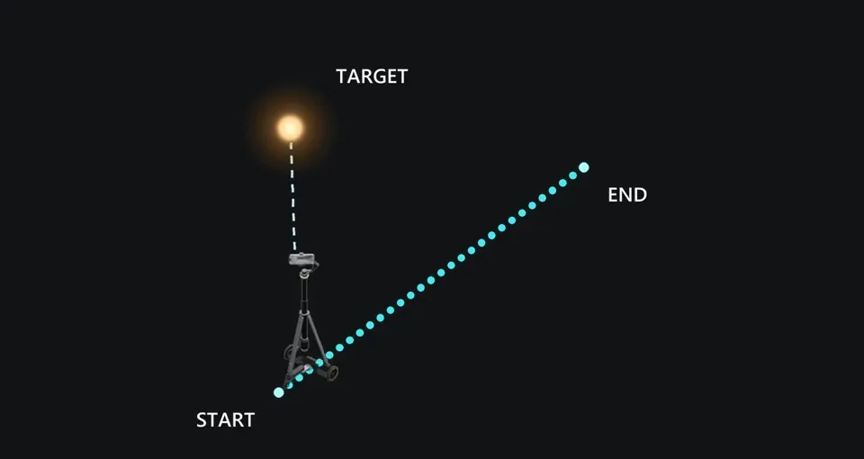
Diagonal
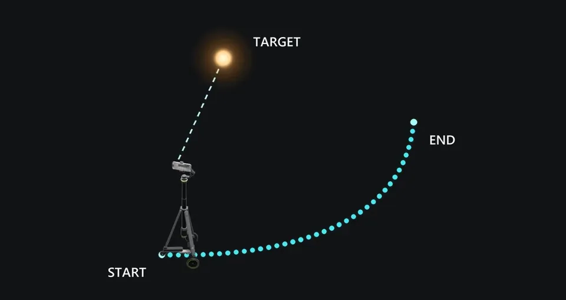
Arc
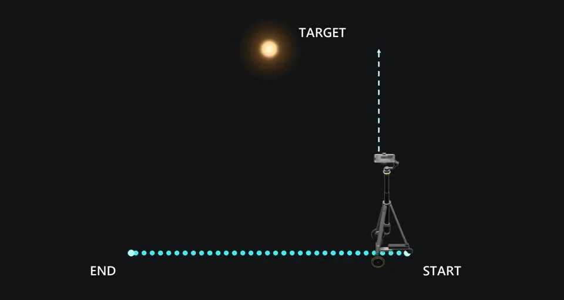
Slide
TRIBOT / BY CINEY AI
Make your
next move.
Your phone. Set free.
Get in touch